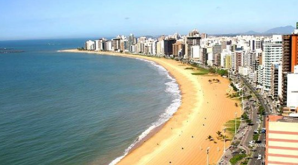
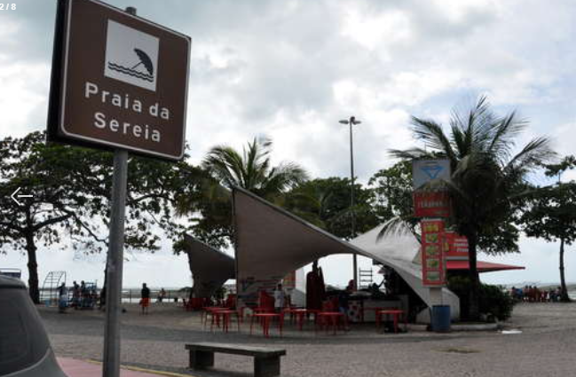
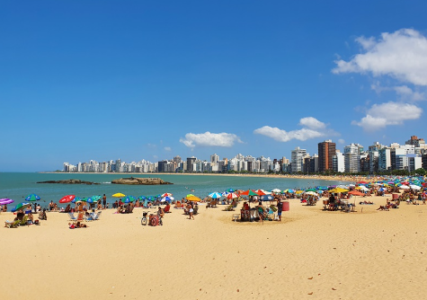
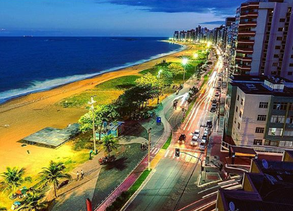
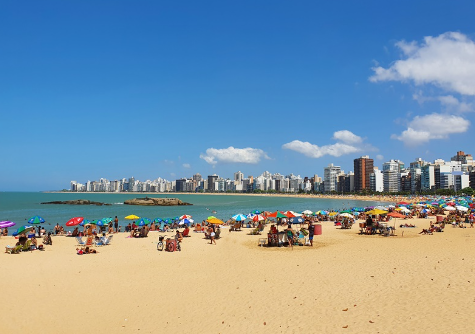
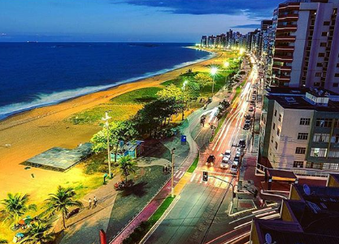
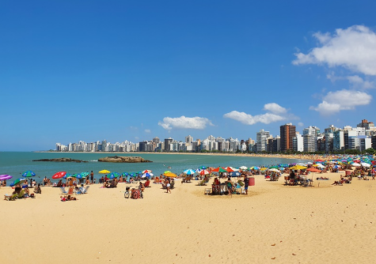
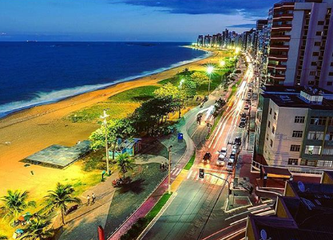

Praia da sereia
Praia de pequena extensão, localizada entre a Praia da Costa e a Praia do Governador. Ela adquiriu este nome, pois no local existe uma escultura de uma sereia. Apresenta um larga faixa de areia grossa de cor creme que na alta temporada fica lotada de visitantes, em busca dos quiosques com suas barracas e cadeiras. Suas águas são calmas e transparentes, ideais para os banhistas com crianças. Na extremidade onde se encontra com a Praia da Costa existe uma pequena formação rochosa e uma ilha de pedra ao lado. Os frequentadores poderão realizar passeios com caiaque. Além disso, existe uma praça com espaço para caminhadas e academia ao ar livre .


 




